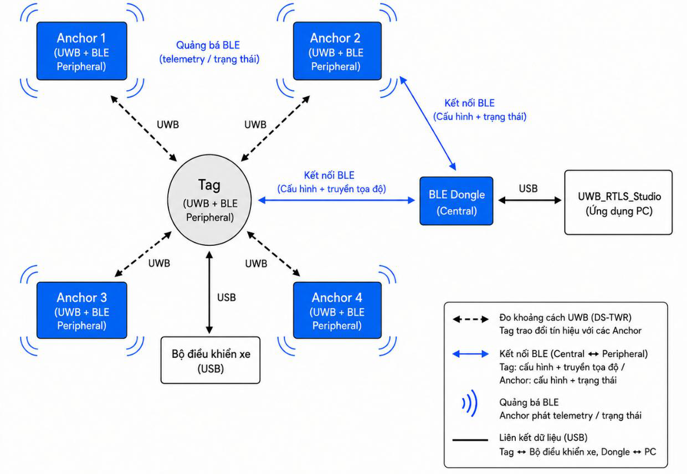

System Deployment & Setup Guide
Documentation Home · Getting Started · Hardware Specs · RTLS Studio Guide
This guide provides a practical, step-by-step procedure for deploying the UWB-RTLS system in a room or warehouse in under 15 minutes.
1. System Deployment Topology

| Entity | Hardware | Function in Deployment |
|---|---|---|
| Anchors (0..N) | Anchor Boards + Tripods | Fixed UWB reference beacons mounted at room perimeter |
| Tag Node | Tag Board on AMR | Mobile unit performing onboard DS-TWR ranging & 8-State UKF fusion |
| Gateway | nRF52840 USB Dongle | Wireless BLE bridge streaming telemetry to laptop PC |
| Host GUI | RTLS Studio (PyQt6) | Desktop map monitoring, anchor coordinate configuration & logging |
2. Step 1: Configure Node Roles & Anchor IDs
2.1. Tag vs. Anchor Mode (User Button)
- Hold User Button (~3s): Toggles node between Tag Mode and Anchor Mode (LED flashes 3 times, saves to Flash, and reboots).
- Single Click: Toggles active UWB ranging on/off.
2.2. Anchor ID Selection (3-position DIP Switch on Anchor Boards)
Anchor boards use a 3-position DIP switch (SW1) to select the Anchor ID from \(0 \dots 7\) (\(2^3 = 8\) Anchors supported) using binary encoding (\(\text{ID} = \text{SW1} \cdot 1 + \text{SW2} \cdot 2 + \text{SW3} \cdot 4\)).
| Anchor ID | Switch 1 (Bit 0) | Switch 2 (Bit 1) | Switch 3 (Bit 2) | Binary / Function |
|---|---|---|---|---|
| Anchor 0 | OFF | OFF | OFF | 000 — Room Origin \((0, 0, z)\) |
| Anchor 1 | ON | OFF | OFF | 001 |
| Anchor 2 | OFF | ON | OFF | 010 |
| Anchor 3 | ON | ON | OFF | 011 |
| Anchor 4 | OFF | OFF | ON | 100 (Optional) |
| Anchor 5 | ON | OFF | ON | 101 (Optional) |
| Anchor 6 | OFF | ON | ON | 110 (Optional) |
| Anchor 7 | ON | ON | ON | 111 (Optional) |
3. Step 2: Physical Mounting Guidelines
Y (Room Depth)
▲
│ [ Anchor 3 ] ───────────────────────── [ Anchor 2 ]
│ │ │
│ │ Convex Hull Operating Zone │
│ │ (Robot always inside) │
│ │ │
│ [ Anchor 0 ] ───────────────────────── [ Anchor 1 ]
└────────────────────────────────────────────────────────► X (Room Width)
| Rule | Requirement | Engineering Reason |
|---|---|---|
| Anchor Height | \(z_A = 1.8 \dots 2.2\text{ m}\) (Head height) | Keeps line-of-sight (LOS) above moving pedestrians (\(\sim 1.65\text{ m}\)). |
| Height Difference | $\Delta z = | z_A - z_T |
| Metal Clearance | \(\ge 20 \dots 30\text{ cm}\) from metal/concrete | Prevents multipath reflections and antenna detuning (\(+0.2..1.0\text{ m}\) error). |
| Convex Hull | Robot strictly inside anchor polygon | Prevents exponential GDOP geometric precision degradation. |
4. Step 3: Measure Anchor Coordinates (Surveying)
Establish one corner Anchor as Origin \((0.0, 0.0, z_0)\), then measure \((X, Y, Z)\) using a laser distance meter:
Example Room Setup (\(8.0\text{ m} \times 5.0\text{ m}\))
| Anchor Node | X (Width) | Y (Depth) | Z (Height) | Placement Position |
|---|---|---|---|---|
| Anchor 0 | 0.00 m |
0.00 m |
2.00 m |
Front-left corner (Origin) |
| Anchor 1 | 8.00 m |
0.00 m |
2.00 m |
Front-right corner |
| Anchor 2 | 8.00 m |
5.00 m |
2.00 m |
Back-right corner |
| Anchor 3 | 0.00 m |
5.00 m |
2.00 m |
Back-left corner |
5. Step 4: Mount Tag on Robot & Connect USB
- Mount Tag Board: Secure horizontally on top of the robot chassis (\(z_{\text{tag}} \approx 0.3 \dots 0.5\text{ m}\)) using plastic standoffs (\(>10\text{ cm}\) clearance from metal plates).
- Robot Interface: Connect USB Type-C to the robot computer (
/dev/ttyACM0on Linux) for real-time \(10\text{ Hz}\) pose stream (px, py, vx, vy, yaw).
6. Step 5: Commission via RTLS Studio
flowchart LR
A["1. Insert USB Dongle<br/>into Laptop"] --> B["2. Launch RTLS Studio<br/>python main.py"] --> C["3. Scan & Connect<br/>Select Tag over BLE"] --> D["4. Enter Coordinates<br/>in Config Tab -> Save to Flash"]
- Insert nRF52840 USB Dongle into laptop.
- Launch RTLS Studio:
- Click Scan BLE \(\rightarrow\) Connect to UWB-Tag.
- Go to Tab 3: Config \(\rightarrow\) Fill in \((X, Y, Z)\) coordinates \(\rightarrow\) Click Save to Flash.
7. Step 6: Live Verification & Testing
- Go to Tab 2: Live Tracking \(\rightarrow\) Click Start Ranging.
- Verify 4 blue anchor dots and red tag marker appear on the 2D map.
- Drive robot \(2\text{ meters}\) forward \(\rightarrow\) Verify marker moves \(2\text{ meters}\) on screen with error \(<\pm 10\text{ cm}\).
8. Troubleshooting
| Symptom | Root Cause | Solution |
|---|---|---|
| No distance to Anchor 2 | Wrong DIP switch or unpowered. | Set DIP switch (SW2 = ON), verify LED blinking. |
| Node is in Anchor mode | Board was set to Anchor previously. | Hold User Button 3s until LED flashes 3 times to switch to Tag mode. |
| Position is flipped | \(X\) and \(Y\) coordinates swapped. | Double check Anchor 1 vs Anchor 3 coordinates in Config tab. |
| Position jumps / large error | Anchor mounted directly on metal. | Move Anchor \(\ge 20\text{ cm}\) away from metal frames or concrete walls. |